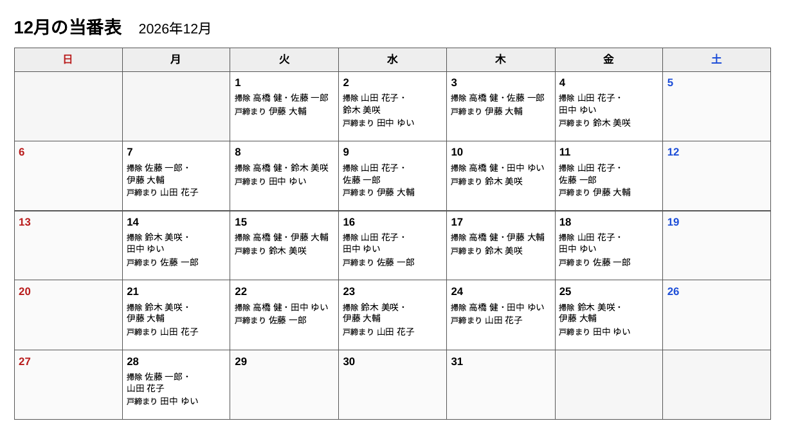

当番表の自動作成
メンバーの名前と期間を入れると、出られない曜日・日付を避けて、回数が偏らない当番表を作るツールです。掃除当番・受付当番・戸締まり・PTA や町内会の持ち回りなど、毎月「誰が何回入ったか」を数えながら手で割り振る手間がなくなります。ソフトのインストールは不要で、いつものブラウザで動きます。
500円（税込・買い切り）
お試し版はすべての機能を使えて、印刷と CSV の保存は最初の10日分までです。決済が終わると、そのまま製品版の画面に移動します。ブックマークしておけば何度でも使えます。

見本のデータで作った当番表をカレンダー形式で印刷した例。名前は説明のための架空のものです。
こんなときに
- 職場や店の掃除当番・戸締まり当番を、毎月カレンダーを見ながら手で割り振っている
- 「火曜は出られない」「12/24〜26 は休み」といった都合を避けながら、回数を同じくらいにしたい
- PTA・町内会・サークルの持ち回りで、偏りがあると不満が出るので、回数の一覧も一緒に配りたい
- 先月の続きから、回数の少ない人を先にして来月分を作りたい
できること
- 期間と曜日：始めと終わりの日、当番のある曜日（平日だけ・土日も など）を選びます。日本の祝日（振替休日を含む）は自動で除けます。年末年始などの休みの日も「12/29〜1/3」のように書いて除けます
- メンバーと出られない日：1行に1人。名前のあとに「火」「月・金」「土日」「12/24」「12/24〜12/26」のように出られない曜日・日付を書けます。Excel の表（名前の列と出られない日の列）をコピーして貼り付けても読めます
- 係と人数：「掃除 2」「戸締まり 1」のように、1日に複数の係・複数人を割り当てられます。同じ日に同じ人が2つの係に入ることはありません
- 偏らない割り当て：回数の少ない人から順に入れます。回数が同じなら、この先に出られる日が少ない人を先に入れて、出られない日の多い人の回数が少なくなりすぎないようにします。「続けて2日入らない」もできる限り守ります
- 続きから作る：今回の回数をそのまま「前回までの回数」に入れて、次の期間を作れます。月ごとに作っても、通しで偏りません
- 印刷・保存：日付ごとの一覧（A4 縦、人ごとの回数表つき）と、1か月1枚のカレンダー（A4 横、日曜始まり・月曜始まり）で印刷できます。CSV（Excel で開ける形）でも保存できます
できないこと（購入前にご確認ください）
- 表を作ったあと、画面の上で2人を入れ替える機能はありません。入れ替えたいときは、メンバーの都合を書き足して作り直すか、CSV を Excel で開いて直してください
- 「この2人は同じ日にする／しない」「新人はベテランと組む」のような組み合わせの条件は指定できません
- 時間帯（午前・午後）ごとのシフトや、勤務時間・給与の計算はできません。シフト管理のソフトではありません
- メンバー全員の都合が合わない日は、空欄にして「人数不足」と表示します（無理に入れません）
- メールや LINE での配信はしません。印刷するか、PDF・CSV に保存するところまでです
- スマートフォンでは操作しにくいため、パソコンでお使いください
Excel だけで作るなら
出られない日がなく、名簿の順に1人ずつ回すだけなら、Excel の式で作れます。A列に日付、名簿を $F$2:$F$7 に置いて、2行目から =INDEX($F$2:$F$7, MOD(ROW()-2, ROWS($F$2:$F$7))+1) を下へコピーすると、名簿の順に繰り返し並びます。このツールが向いているのは、出られない日を避けながら回数をそろえたいとき、1日に何人も・何種類もの係があるとき、祝日を除いた日付を自分で並べたくないときです。
よくある質問
| 回数はぴったり同じになりますか？ | 出られない日がなければ、差は1回までになります（「続けて2日入らない」を選んでも同じです）。出られない日が多い人や「続けて2日入らない」を選んだときは、その人が入れる日が限られるため差が出ることがあります。画面に1人あたりの回数の幅を表示し、人ごとの回数表も一緒に印刷できます。 |
|---|---|
| 毎回同じ順番になりますか？ | 同じ条件なら同じ表になります（名簿の上の人から先に入ります）。順番を変えたいときは「名簿の順をまぜて作り直す」を押してください。 |
| メンバーの名前はどこかに送られますか？ | 送られません。計算・印刷はすべてお使いのブラウザの中で行います。係・表題などの設定だけをブラウザに保存し、名前と出られない日は保存しません。 |
| 祝日はいつまで入っていますか？ | 「国民の祝日に関する法律」の決まりから 2010〜2099年の祝日を計算しています。春分の日・秋分の日は、まだ正式に発表されていない年は計算による見込みの日付です。法律が変わった場合は、ツールを更新するまで反映されません。 |
| 何人・何日まで使えますか？ | 製品版は人数の制限はありません。1回に作れる期間は1年（366日）までです。 |
| 印刷すると小さくなります | 印刷画面で倍率を「100%（実際のサイズ）」にしてください。カレンダーは用紙の向きが横になります。 |
安心してお使いいただくために
- 名前・出られない日はお使いのブラウザの中だけで処理し、サーバーには送信しません
- 動作環境：最新版の Chrome・Safari・Edge・Firefox（パソコン）
- 説明どおりに動かない場合は、ご購入から7日以内にご連絡いただければ返金します
店の休業日を入れた年間カレンダーは 年間営業カレンダーの作成・印刷、名札や席札は 名札・席札の一括印刷 もあります。